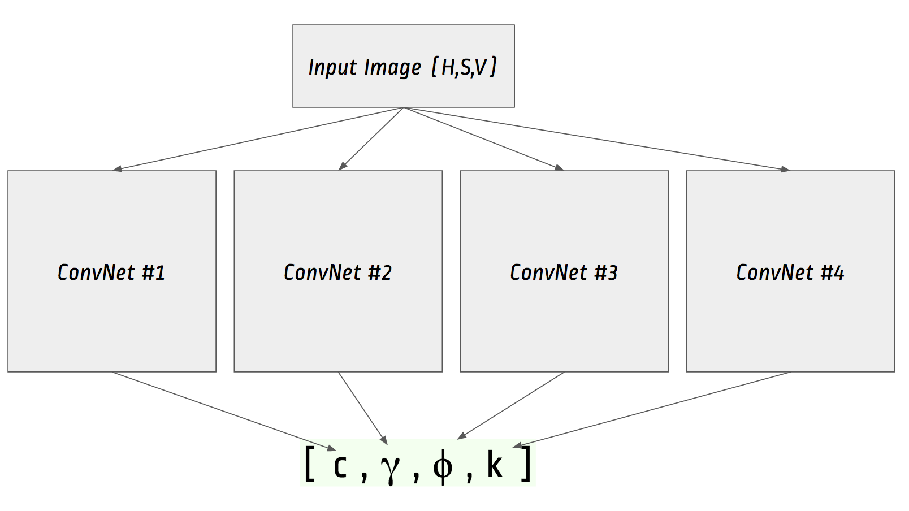
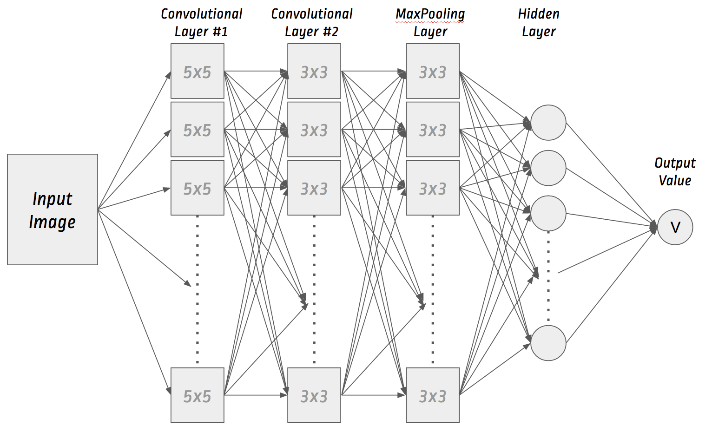

Fundamentally, image transformation is a function which takes an image as an input, processes, and returns another image like so:
`I(x,y)' = f(I(x,y))`
De facto, image transformation "`f`" can be any enhancement function, e.g., brightness scaling, color transformation, saturisation, etc.
In this project, the 4-dim transformation vector `T` is defined as:
`T = [c,gamma,phi,k]`
Where,
`f : fr R^3 -> fr R^3`
`f([(h),(s),(v)]) = [(h'),(s'),(v')] = [(h+phi), (s*k), (255*(v/255)^gamma *c)]`
Thus, the objective of the project is to find the best transformation vector `T` without explicit search.
Since I want to solve for 4-dimensional vector which enhances the image quality, 4 separate networks with exactly the same structure will be created and trained.

Where each of the network is built from following structure.

As a side note, to getting understand how Convolutional Neural Network works in just half an hour, I recommand watching this video:
I've made a simple trick to populate the training set. As you may know, CNN is a supervised learning and it needs a labelled training set to learn from.
"It's more painful to make a trainset of low quality images and annotate them with hand-crafted enhancement transformations."
So, with a quick hack, I downloaded good photos and generate random filters which degrade quality of those images. The results of the filters are used as training images along with the reverse of generated transformations. So we got:
Degradation `T: I -> I'`
Where:
Then I can easily reverse `T` to obtain the enhancement transformation `T'` with respect to the degraded image.
With this simple approach, I can randomly generate a large trainset of low quality images (`I'`) with the enhancement transformations (`T'`).
CAVEAT: Reverse transformation is not lossless.
ConvNet is iteratively and repeatedly trained using the prepared enhancement transformation vector and the low quality images (as 3-D matrices). Following graph shows the burndown chart of training loss
RMSE is the metric I measure how accurate the training models perform. After a training epoch finishes, the models are once probed and following is the burndown chart of the RMSE through time.
Validation Losses
Three enhancement parameters including Brightness factor, Saturation Factor, and Gamma ratio appear to be well-trained as you can see error rates are falling gradually through time. However, my model doesn't seem to learn the Hue factor.
My only computer is just a plain laptop so I set up an AWS EC2 as a powerful computing cluster. ConvNet requires large amount of computational power and memory footprint, so I basically choose one of the Compute optimised instances (C4).
GPU instance is indeed a recommended platform though.
But
I haven't chosen it because of budget-first purpose.
My C4 takes ~50 minutes per epoch to train ConvNet.
So training 50 epochs takes around 41 hours. My C4 AWS was a spot instance which costs up to $0.5 per hour, so in total, I paid less than 21 dollars to train my ConvNet model.